1-8막 · 가면 축제의 소동
한국어 번역은 독일어 원문에 대응하는 자동 번역 초안입니다.
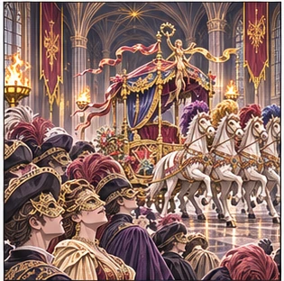
독일어 원문 · 한국어 번역
HEROLD:
Bei meinem Stabe! Ruh gehalten!--
Doch braucht es meiner Hülfe kaum;
Seht, wie die grimmen Ungestalten,
Bewegt im rasch gewonnenen Raum,헤럴드: 내 직원이! 침착하세요!-- 하지만 내 도움은 거의 필요하지 않습니다. 무시무시한 괴물들이 어떻게 나타나는지 살펴보세요 빠르게 얻은 공간으로 이동,
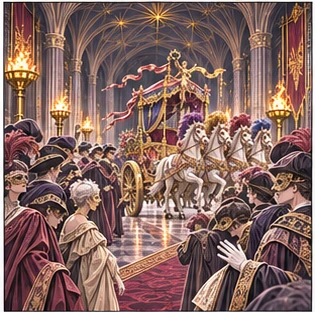
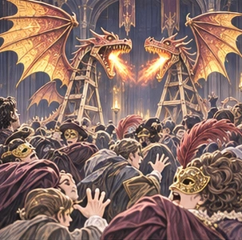
독일어 원문 · 한국어 번역
Das Doppel-Flügelpaar entfalten.
Entrüstet schütteln sich der Drachen
Umschuppte, feuerspeiende Rachen;
Die Menge flieht, rein ist der Platz.두 쌍의 날개를 펼칩니다. 용들은 분개하여 흔들리고 있다 비늘이 있고 불을 뿜는 턱; 군중은 달아났고 장소는 깨끗했다.
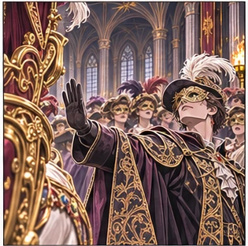
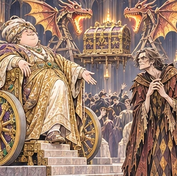
독일어 원문 · 한국어 번역
HEROLD:
Er tritt herab, wie königlich!
Er winkt, die Drachen rühren sich,
Die Kiste haben sie vom Wagen
Mit Gold und Geiz herangetragen,헤럴드: 그는 물러났습니다. 얼마나 왕족이겠습니까! 그가 손을 흔들면, 용들이 휘젓고, 그들은 차에서 상자를 가져왔어 금과 탐욕으로 앞으로 나아갔고,
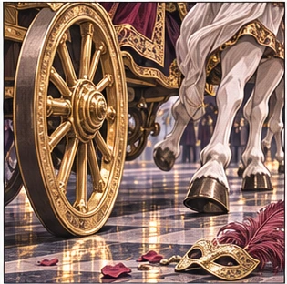
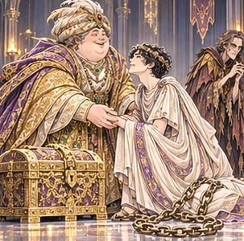
독일어 원문 · 한국어 번역
Sie steht zu seinen Füßen da:
Ein Wunder ist es, wie's geschah.
PLUTUS:
Nun bist du los der allzulästigen Schwere,
Bist frei und frank, nun frisch zu deiner Sphäre!그녀는 그의 발 앞에 서 있습니다. 어떻게 그런 일이 일어났는지 기적입니다. 플루투스: 이제 당신은 너무 짜증나는 무거움에서 벗어났습니다. 당신은 자유롭고 솔직하며 이제 당신의 영역에 새롭게 적응했습니다!
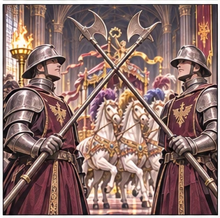
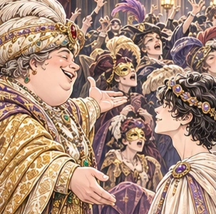
독일어 원문 · 한국어 번역
Hier ist sie nicht! Verworren, scheckig, wild
Umdrängt uns hier ein fratzenhaft Gebild.
Nur wo du klar ins holde Klare schaust,
Dir angehörst und dir allein vertraust,그녀는 여기 없어요! 혼란스럽고 고르지 못하며 거칠다 여기 우리를 둘러싼 암울한 인물이 있습니다. 아름다운 선명함을 분명히 들여다볼 때에만 당신에게 속하고 당신만을 신뢰하며,
독일어 원문 · 한국어 번역
Dorthin, wo Schönes, Gutes nur gefällt,
Zur Einsamkeit!--Da schaffe deine Welt.
KNABE LENKER:
So acht' ich mich als werten Abgesandten,
So lieb' ich dich als nächsten Anverwandten.아름답고 좋은 일만 있는 곳으로 부디 외로움으로!--거기에 당신의 세계를 창조하십시오. 소년용 핸들바: 그래서 나는 나 자신을 합당한 사절이라고 생각합니다. 그래서 나는 당신을 가장 가까운 친척으로 사랑합니다.
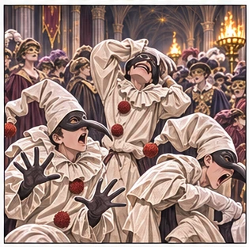
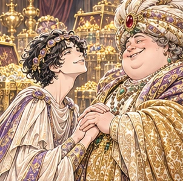
독일어 원문 · 한국어 번역
Wo du verweilst, ist Fülle; wo ich bin,
Fühlt jeder sich im herrlichsten Gewinn.
Auch schwankt er oft im widersinnigen Leben:
Soll er sich dir? soll er sich mir ergeben?네가 사는 곳마다 풍요가 있다. 내가 어디에 있는지, 모두가 가장 멋진 승리를 거둔 것 같은 기분을 느낍니다. 그는 또한 종종 터무니없는 삶에 동요합니다. 그가 당신과 합류해야 할까요? 그 사람이 나한테 항복해야 하나?
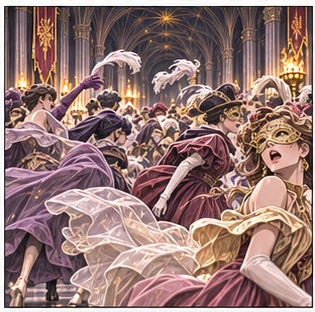
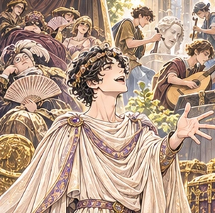
독일어 원문 · 한국어 번역
Die Deinen freilich können müßig ruhn,
Doch wer mir folgt, hat immer was zu tun.
Nicht insgeheim vollführ' ich meine Taten,
Ich atme nur, und schon bin ich verraten.물론 당신은 유휴 상태일 수 있습니다. 하지만 나를 따르는 사람은 항상 할 일이 있습니다. 나는 내 일을 은밀히 행하지 아니하고 숨만 쉬고 있는데 벌써 배신당했어요.
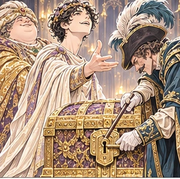
독일어 원문 · 한국어 번역
So lebe wohl! Du gönnst mir ja mein Glück;
Doch lisple leis', und gleich bin ich zurück.
PLUTUS:
Nun ist es Zeit, die Schätze zu entfesseln!
Die Schlösser treff' ich mit des Herolds Rute.그럼 작별 인사! 당신은 나에게 행복을 주셨습니다. 하지만 조용히 혀를 차면 잠시 후에 돌아올게요. 플루투스: 이제 보물을 공개할 시간입니다! 전령의 지팡이로 성을 공격하겠습니다.
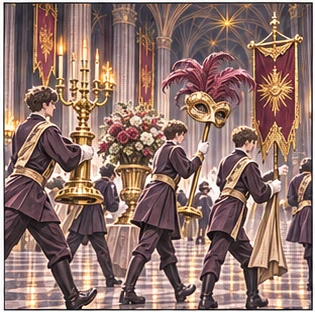
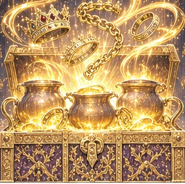
독일어 원문 · 한국어 번역
Es tut sich auf! schaut her! in ehrnen Kesseln
Entwickelt sich's und wallt von goldnem Blute,
Zunächst der Schmuck von Kronen, Ketten, Ringen;
Es schwillt und droht, ihn schmelzend zu verschlingen.열리고 있어요! 여기 좀 봐! 명예로운 가마솥에서 황금빛 피를 흘리며 자라나고, 우선, 왕관, 사슬, 반지의 보석; 그것은 부풀어 올라 그를 녹여 삼키려고 위협합니다.
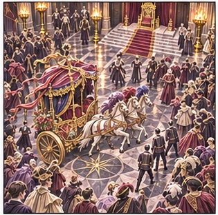
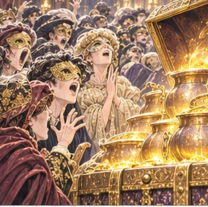
독일어 원문 · 한국어 번역
WECHSELGESCHREI DER MENGE:
Seht hier, o hin! wie's reichlich quillt,
Die Kiste bis zum Rande füllt.--
Gefäße, goldne, schmelzen sich,
Gemünzte Rollen wälzen sich.--군중의 울음소리: 여기 좀 보세요, 아 보세요! 얼마나 풍성하게 부풀어 오르는지, 상자를 가득 채우세요.-- 그릇, 황금, 녹아, 코인 롤이 굴러 다닙니다.--
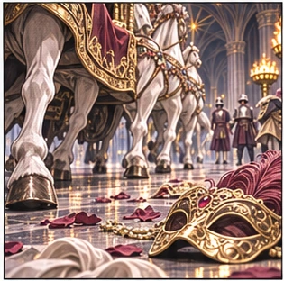
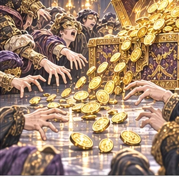
독일어 원문 · 한국어 번역
Dukaten hüpfen wie geprägt,
O wie mir das den Busen regt--
Wie schau' ich alle mein Begehr!
Da kollern sie am Boden her.--Ducats는 주조된 것처럼 점프하고, 아, 그게 내 가슴을 얼마나 감동시키는지-- 내 모든 욕망을 어떻게 보는지! 그러다가 땅바닥에 굴러다닙니다.--
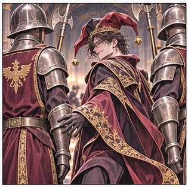
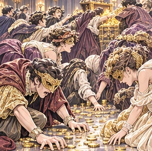
독일어 원문 · 한국어 번역
Man bietet's euch, benutzt's nur gleich
Und bückt euch nur und werdet reich.--
Wir andern, rüstig wie der Blitz,
Wir nehmen den Koffer in Besitz.제공되니 바로 사용해보세요 그리고 그냥 몸을 굽혀 부자가 되세요.-- 번개처럼 강한 나머지 우리는 우리는 여행 가방을 차지합니다.
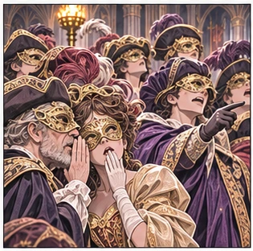
독일어 원문 · 한국어 번역
HEROLD:
Was soll's, ihr Toren? soll mir das?
Es ist ja nur ein Maskenspaß.
Heut abend wird nicht mehr begehrt;
Glaubt ihr, man geb' euch Gold und Wert?헤럴드: 요점이 뭐야, 바보들아? 그거 내꺼야? 그냥 마스크 재미죠. 오늘 밤에는 더 이상 욕망이 없을 것입니다. 그들이 당신에게 금과 가치를 줄 것이라고 생각합니까?
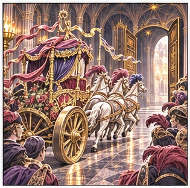
독일어 원문 · 한국어 번역
Sind doch für euch in diesem Spiel
Selbst Rechenpfennige zuviel.
Ihr Täppischen! ein artiger Schein
Soll gleich die plumpe Wahrheit sein.그들은 당신을 위해 이 게임에 참여하고 있습니다 심지어 산술 동전도 너무 많습니다. 바보들아! 좋은 외모 솔직한 진실이어야합니다.
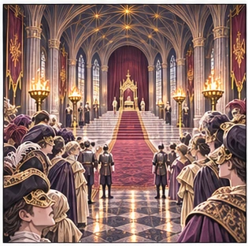
독일어 원문 · 한국어 번역
Was soll euch Wahrheit?--Dumpfen Wahn
Packt ihr an allen Zipfeln an.--
Vermummter Plutus, Maskenheld,
Schlag dieses Volk mir aus dem Feld.진실의 요점은 무엇입니까? 둔한 망상 구석구석까지 손을 내밀어 주시나요.-- 가면을 쓴 영웅, 가면을 쓴 플루투스(Masked Plutus) 이 사람들을 내 분야에서 쫓아내세요.
독일어 원문 · 한국어 번역
PLUTUS:
Dein Stab ist wohl dazu bereit,
Verleih ihn mir auf kurze Zeit.--
Ich tauch' ihn rasch in Sud und Glut.--
Nun, Masken, seid auf eurer Hut!플루투스: 귀하의 직원은 아마도 이에 대한 준비가 되어 있을 것입니다. 잠깐만 빌려주세요.-- 빨리 맥주와 불씨에 담그겠습니다.-- 이제 마스크를 조심하세요!
독일어 원문 · 한국어 번역
Wie's blitzt und platzt, in Funken sprüht!
Der Stab, schon ist er angeglüht.
Wer sich zu nah herangedrängt,
Ist unbarmherzig gleich versengt.--얼마나 번쩍이고 터지고, 불꽃이 튀는지! 직원들은 이미 빛나고 있습니다. 너무 가까이 다가가는 사람 무자비하게 불태워진다.--
독일어 원문 · 한국어 번역
Jetzt fang' ich meinen Umgang an.
GESCHREI UND GEDRÄNG:
O weh! Es ist um uns getan.--
Entfliehe, wer entfliehen kann!--
Zurück, zurück, du Hintermann!--이제 거래를 시작하겠습니다. 비명과 숨소리: 아 이런! 이제 끝났습니다.-- 도망칠 수 있는 자는 도망쳐라!-- 뒤로, 뒤로, 너 뒤에 있어!--
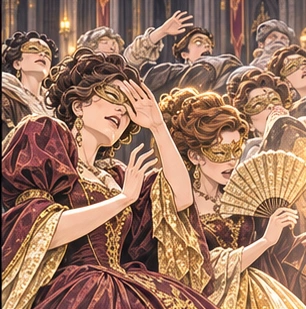
독일어 원문 · 한국어 번역
Mir sprüht er heiß ins Angesicht.--
Mich drückt des glühenden Stabs Gewicht--
Verloren sind wir all' und all'.--
Zurück, zurück, du Maskenschwall!그는 내 얼굴에 뜨거운 물을 뿌린다.-- 빛나는 막대의 무게가 나를 짓누르고 있다. 우리는 모두 길을 잃었습니다.-- 뒤로, 뒤로, 가면을 쓴 토렌트!
독일어 원문 · 한국어 번역
Zurück, zurück, unsinniger Hauf'!--
O hätt' ich Flügel, flög' ich auf.--
PLUTUS:
Schon ist der Kreis zurückgedrängt,
Und niemand, glaub' ich, ist versengt.뒤로, 뒤로, 무의미한 무리!-- 아, 날개가 있으면 날아갈 텐데.-- 플루투스: 원은 이미 뒤로 밀려났고, 그리고 제 생각엔 아무도 불에 타지 않을 것 같아요.
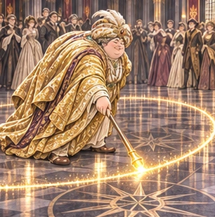
독일어 원문 · 한국어 번역
Die Menge weicht,
Sie ist verscheucht.--
Doch solcher Ordnung Unterpfand
Zieh' ich ein unsichtbares Band.군중은 떠나고, 그녀는 겁에 질려 도망갑니다.-- 하지만 그런 명령은 약속이다 보이지 않는 띠를 그립니다.
독일어 원문 · 한국어 번역
HEROLD:
Du hast ein herrlich Werk vollbracht,
Wie dank' ich deiner klugen Macht!
PLUTUS:
Noch braucht es, edler Freund, Geduld:
Es droht noch mancherlei Tumult.헤럴드: 놀라운 일을 성취하셨으니, 당신의 영리한 힘에 얼마나 감사드립니다! 플루투스: 여전히 인내가 필요합니다, 고귀한 친구여: 여전히 많은 혼란의 위험이 있습니다.
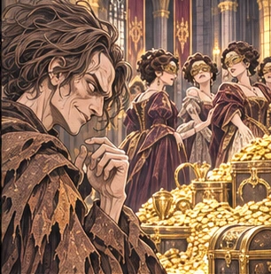
독일어 원문 · 한국어 번역
GEIZ:
So kann man doch, wenn es beliebt,
Vergnüglich diesen Kreis beschauen;
Denn immerfort sind vornenan die Frauen,
Wo's was zu gaffen, was zu naschen gibt.싱글: 원하신다면, 이 원을 즐겨보세요. 여성은 항상 선두에 있기 때문에 멍하니 볼 것이 있고, 간식으로 먹을 것이 있는 곳.
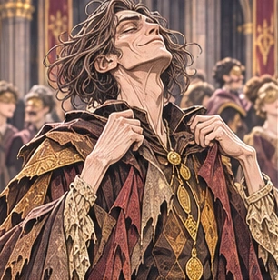
독일어 원문 · 한국어 번역
Noch bin ich nicht so völlig eingerostet!
Ein schönes Weib ist immer schön;
Und heute, weil es mich nichts kostet,
So wollen wir getrost sponsieren gehn.아직 완전히 녹슬지는 않았어요! 아름다운 여자는 언제나 아름답습니다. 그리고 오늘은 비용이 전혀 들지 않기 때문에 그래서 우리는 자신있게 후원하고 싶습니다.
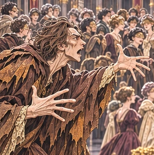
독일어 원문 · 한국어 번역
Doch weil am überfüllten Orte
Nicht jedem Ohr vernehmlich alle Worte,
Versuch' ich klug und hoff', es soll mir glücken,
Mich pantomimisch deutlich auszudrücken.하지만 사람이 많은 곳에서는 모든 사람의 귀가 모든 단어를 들을 수 있는 것은 아닙니다. 현명하게 노력해서 성공할 수 있기를 바라겠습니다. 무언극으로 자신을 명확하게 표현합니다.
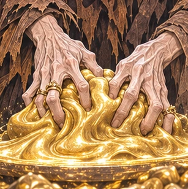
독일어 원문 · 한국어 번역
Hand, Fuß, Gebärde reicht mir da nicht hin,
Da muß ich mich um einen Schwank bemühn.
Wie feuchten Ton will ich das Gold behandeln,
Denn dies Metall läßt sich in alles wandeln.손, 발, 몸짓만으로는 부족해요. 나는 그것에 대해 조치를 취하도록 노력해야 할 것입니다. 나는 금을 젖은 진흙처럼 다루리라. 왜냐하면 이 금속은 무엇이든 변형될 수 있기 때문입니다.
독일어 원문 · 한국어 번역
HEROLD:
Was fängt der an, der magre Tor!
Hat so ein Hungermann Humor?
Er knetet alles Gold zu Teig,
Ihm wird es untern Händen weich;헤럴드: 그 깡마른 바보야, 그 사람은 어쩌려고? 저렇게 배고픈 사람이 유머 감각이 있는 걸까요? 그는 모든 금을 반죽하여 반죽하고 그의 손은 부드러워진다.
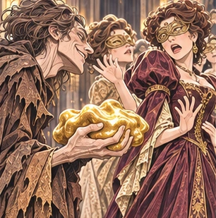
독일어 원문 · 한국어 번역
Wie er es drückt und wie es ballt,
Bleibt's immer doch nur ungestalt.
Er wendet sich zu den Weibern dort,
Sie schreien alle, möchten fort,어떻게 쥐어짜는지, 어떻게 꽉 쥐는지, 항상 무정형으로 유지됩니다. 그는 거기 있는 여자들에게로 돌아섰다. 다들 비명을 지르며 떠나고 싶어 하지만
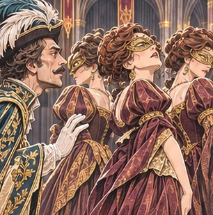
독일어 원문 · 한국어 번역
Gebärden sich gar widerwärtig;
Der Schalk erweist sich übelfertig.
Ich fürchte, daß er sich ergetzt,
Wenn er die Sittlichkeit verletzt.정말 역겹게 행동하세요. 장난은 나쁜 것으로 밝혀졌습니다. 그 사람이 복수할까봐 두렵다. 도덕성을 위반하는 경우.
독일어 원문 · 한국어 번역
Dazu darf ich nicht schweigsam bleiben,
Gib meinen Stab, ihn zu vertreiben.
PLUTUS:
Er ahnet nicht, was uns von außen droht;
Laß ihn die Narrenteidung treiben!나는 이 일에 대해 침묵할 수 없다. 내 지팡이를 주어 그를 쫓아내게 하라. 플루투스: 그는 외부에서 무엇이 우리를 위협하는지 전혀 모릅니다. 그가 어리석은 일을 하게 하라!
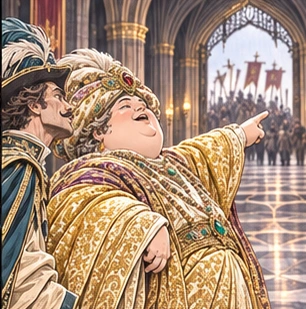
독일어 원문 · 한국어 번역
Ihm wird kein Raum für seine Possen bleiben;
Gesetz ist mächtig, mächtiger ist die Not.
GETÜMMEL UND GESANG:
Das wilde Heer, es kommt zumal
Von Bergeshöh' und Waldestal,그는 자신의 장난을 치를 여지가 없을 것입니다. 법은 강력하고 필요성은 더욱 강력합니다. 부시와 노래: 야생의 군대가 온다 Bergeshöhe와 Waldestal에서,
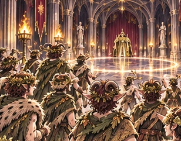
독일어 원문 · 한국어 번역
Unwiderstehlich schreitet's an:
Sie feiren ihren großen Pan.
Sie wissen doch, was keiner weiß,
Und drängen in den leeren Kreis.거부할 수 없이 진행됩니다. 그들은 그들의 위대한 팬을 축하합니다. 아무도 모르는 것을 당신은 알고 있습니다 그리고 빈 원 안으로 밀어 넣으세요.
독일어 원문 · 한국어 번역
PLUTUS:
Ich kenn' euch wohl und euren großen Pan!
Zusammen habt ihr kühnen Schritt getan.
Ich weiß recht gut, was nicht ein jeder weiß,
Und öffne schuldig diesen engen Kreis.플루투스: 나는 당신과 당신의 큰 팬을 잘 알고 있습니다! 함께 대담한 발걸음을 내디뎠습니다. 모두가 모르는 사실을 나는 아주 잘 알고 있다. 그리고 이 좁은 원을 죄책감으로 열어보세요.
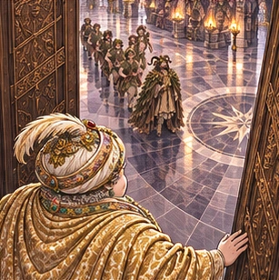
독일어 원문 · 한국어 번역
Mag sie ein gut Geschick begleiten!
Das Wunderlichste kann geschehn;
Sie wissen nicht, wohin sie schreiten,
Sie haben sich nicht vorgesehn.좋은 기술이 당신과 함께하길 바랍니다! 가장 놀라운 일이 일어날 수 있습니다. 그들은 자기들이 어디로 가는지 모릅니다. 그들은 미리 계획을 세우지 않았습니다.
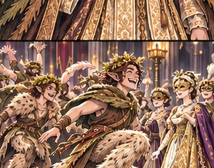
독일어 원문 · 한국어 번역
WILDGESANG:
Geputztes Volk du, Flitterschau!
Sie kommen roh, sie kommen rauh,
In hohem Sprung, in raschem Lauf,
Sie treten derb und tüchtig auf.거친 노래: 사람들을 다듬어준 당신, 허니문 쇼! 그것들은 날것으로 오고, 거칠게 오고, 높은 점프로, 빠른 달리기로, 그들은 힘들고 효율적으로 보입니다.
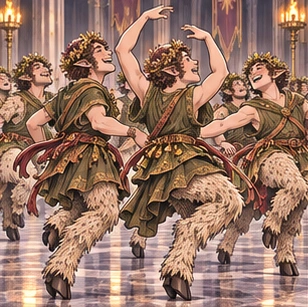
독일어 원문 · 한국어 번역
FAUNEN:
Die Faunenschar
Im lustigen Tanz,
Den Eichenkranz
Im krausen Haar,FAUNS: 동물군 그룹 즐거운 춤을 추며, 참나무 화환 곱슬머리에,
독일어 원문 · 한국어 번역
Ein feines zugespitztes Ohr
Dringt an dem Lockenkopf hervor,
Ein stumpfes Näschen, ein breit Gesicht,가늘고 뾰족한 귀 곱슬머리에서 나오는데, 뭉툭한 코, 넓은 얼굴,
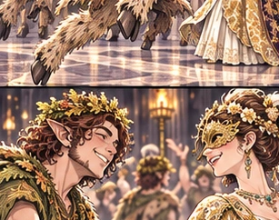
독일어 원문 · 한국어 번역
Das schadet alles bei Frauen nicht:
Dem Faun, wenn er die Patsche reicht,
Versagt die Schönste den Tanz nicht leicht.
이 중 어느 것도 여성에게 해를 끼치지 않습니다. 목신이 문제를 일으키면, 가장 아름다운 사람은 춤에 쉽게 실패하지 않습니다.